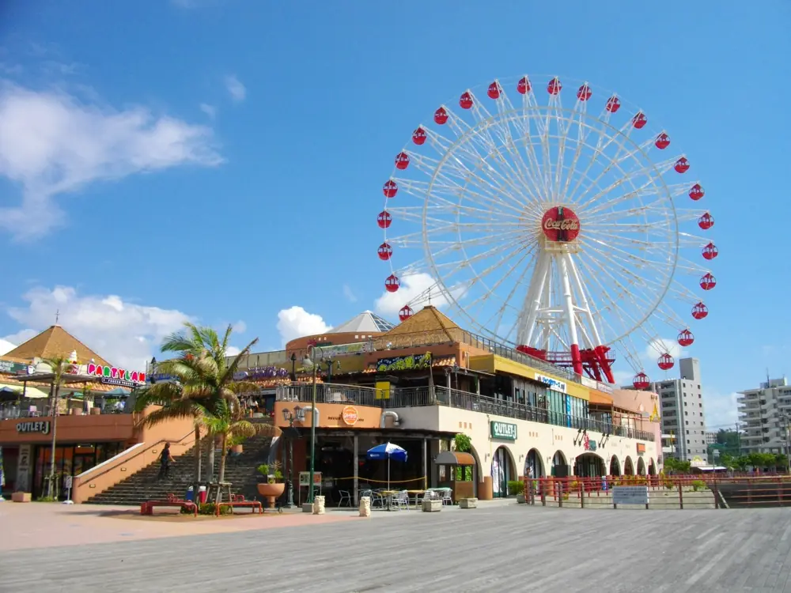
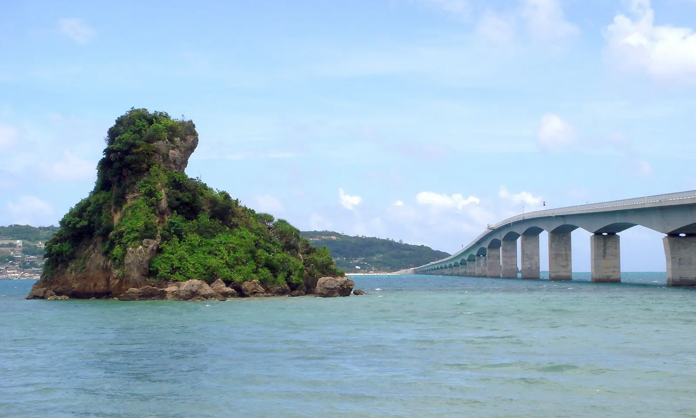
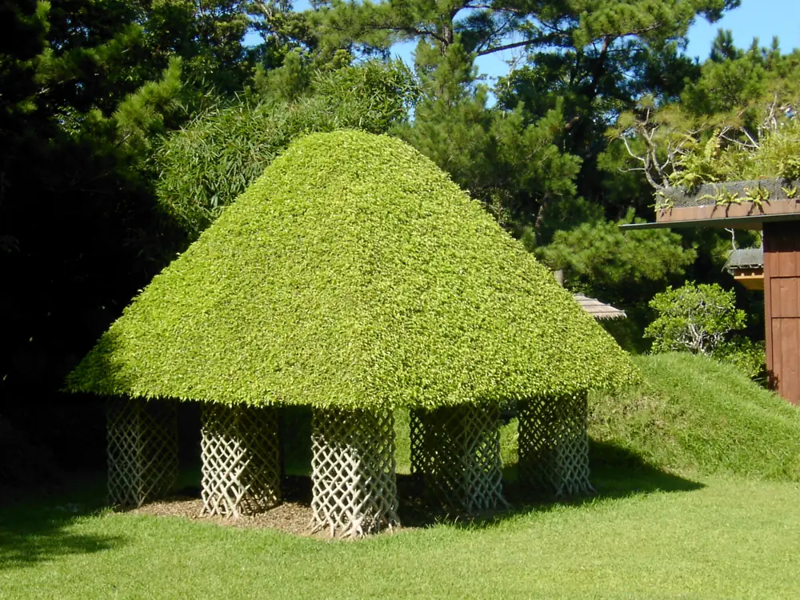
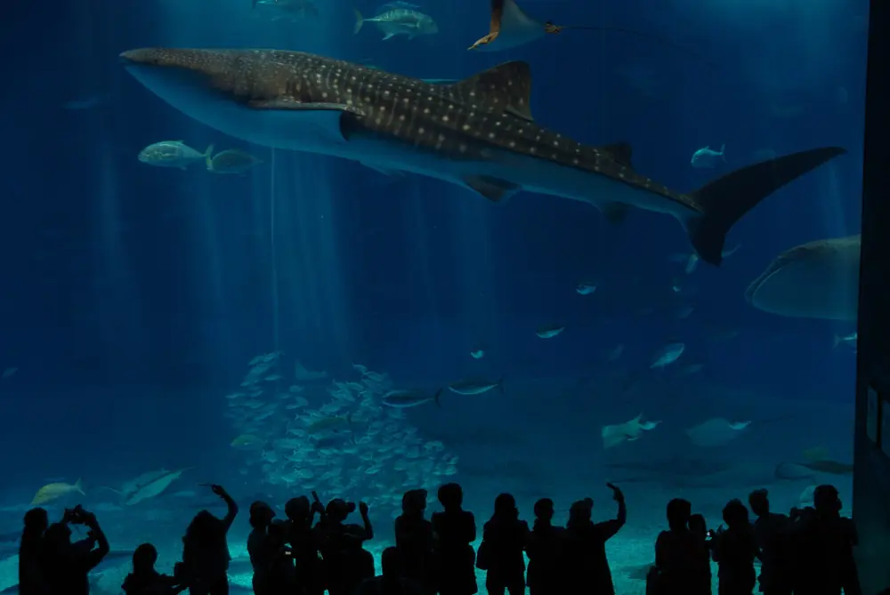
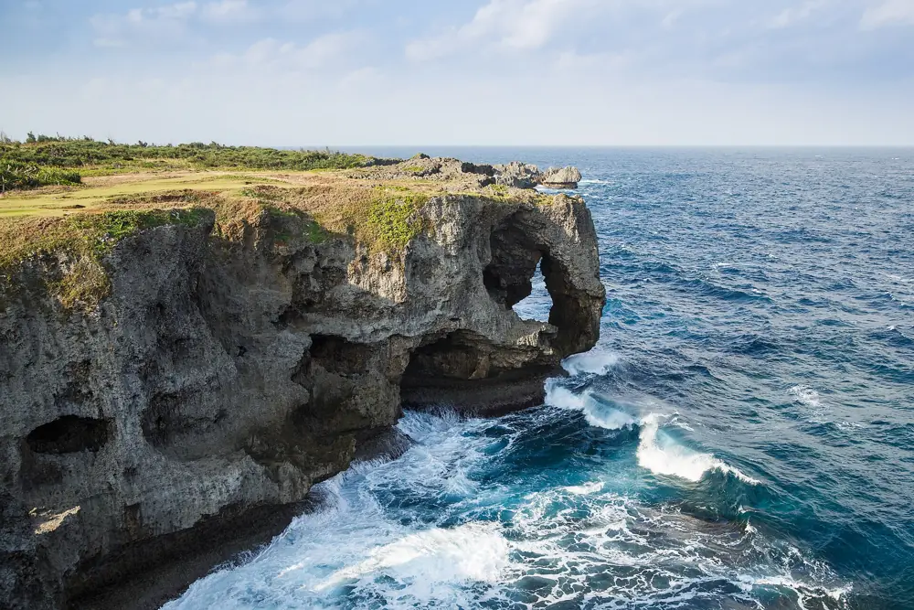
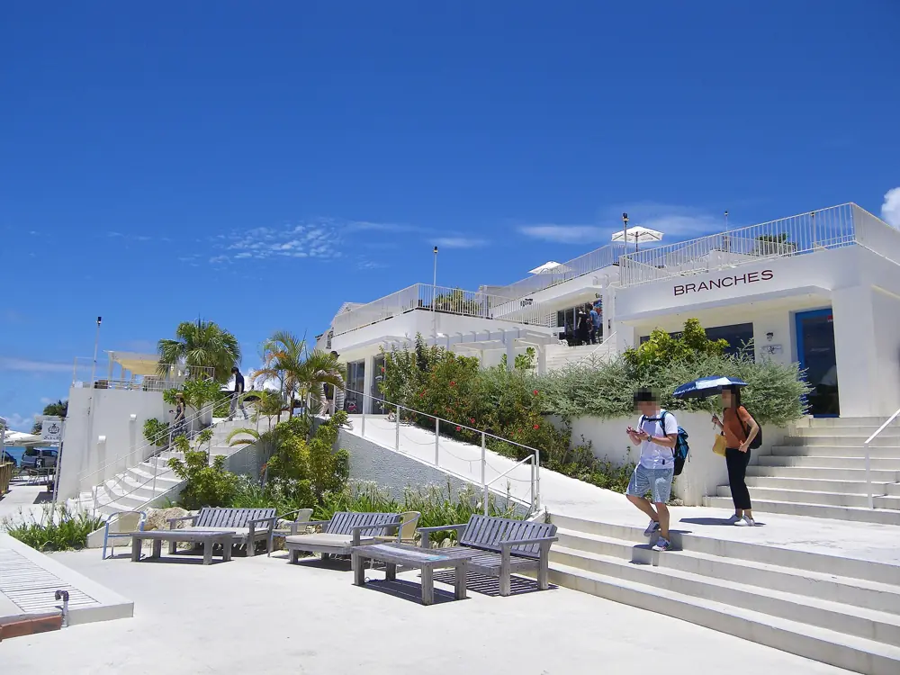

D12/24（三）落地就開玩：美國村 × 動物王國
飛機一落地，先去北谷美國村，摩天輪和海風就是沖繩給我們的第一個招呼。午餐在 Ocean Boo! 圍著暖呼呼的阿古豬涮涮鍋開動。
下午到沖縄こどもの國看動物、玩室內博物館，之後順路停サンエー石川採買，傍晚入住 13A 名嘉真。

2027/2/24–2/28｜4 晚 5 天
2 位長輩、5 位大人、2 個小孩，住在名嘉真 Grandioso 13A。一起去看鯨鯊、開過跨海大橋、吃熱騰騰的阿古豬。首尾包車、中三日兩台 compact 自駕；每天只玩幾個地方、中午留午睡。

D12/24（三）飛機一落地，先去北谷美國村，摩天輪和海風就是沖繩給我們的第一個招呼。午餐在 Ocean Boo! 圍著暖呼呼的阿古豬涮涮鍋開動。
下午到沖縄こどもの國看動物、玩室內博物館，之後順路停サンエー石川採買，傍晚入住 13A 名嘉真。

D22/25（四）早上在名嘉真取兩台租車，再到 Bios 之丘搭有屋頂的小船看亞熱帶森林，中午在園裡吃沖繩麵。
午後回 13A 好好睡一覺，傍晚到琉球村看 Eisa 太鼓舞，晚餐 Seaside Drive-in。

D32/26（五）這趟最期待的一天！站在黑潮之海大水槽前，看鯨鯊和鬼蝠魟慢慢游過，再去看可愛的海豚表演。
午後開過碧藍的古宇利大橋、登上海洋塔看海，晚餐在名護吃本部和牛燒肉。

D42/27（六）趁早上人少去萬座毛，沿著平坦步道看象鼻岩和一望無際的海。接著到名護鳳梨園坐導覽車、吃鳳梨，午餐在百年古民家「大家」嚐沖繩家常味。
下午回住宿休息，晚上是全程最豐盛的一餐：阿古豬隱家慶祝晚餐。

D52/28（日）最後一天包車退房，到瀨長島 Umikaji Terrace，白色小鎮依著山坡面向大海，抬頭就看得到飛機起降。
在 SEE THE SEA 吃一份海景塔可飯，直送機場搭機，把沖繩的陽光一起帶回家。
9 人・2027/2/24（三）– 2/28（日）・住 Grandioso 恩納 13A｜D1／D5 包車・D2–D4 兩台租車｜順路、照顧午睡
景點沒有增加，只調整順序：每天 12:30–14:30 留給幼兒在車上或住宿午睡；每天只往一個方向走，不走回頭路。
D1 先在北谷 Ocean Boo! 吃阿古豬涮涮鍋午餐再去動物園；D2 中午回住宿休息；D3 晚餐在名護回程路上吃；D4 早上先去萬座毛，晚上吃阿古豬隱家慶祝晚餐。
← 表格可左右滑動 →
| 日 | 原版 | 新版 | 好處 |
|---|---|---|---|
| D1 | 兒童王國 12:00–14:30 → 美國村 15:15 → 恩納 | 包車：美國村 Ocean Boo! 午餐 → 兒童王國 → 超市 → 入住 13A | 首日包車免取租車；午睡在車上；Ocean Boo! 不繞路 |
| D2 | Bios 之丘 → 午餐 → 琉球村 13:00–15:00 | 取兩台車 → Bios 之丘（園內午餐）→ 回住宿午睡 → 琉球村 15:15＋16:00 Eisa → 5 分鐘到晚餐 | 少一段找午餐的車程，長輩和幼兒都有午休 |
| D3 | 08:15 出發，美麗海 9:30，古宇利 14:00–16:00 | 08:00 出發，美麗海 9:15（9:30 餵食、上午海豚表演）→ 11:15 午餐 → 古宇利 13:00 → 名護提早吃晚餐 | 午睡在車上；晚餐在回程路上吃，不用回住宿後再出門 |
| D4 | 鳳梨園 10:00 → 午餐 → 萬座毛 14:00 | 萬座毛 09:20 → 鳳梨園 → 大家 → 回 13A → 17:30 前還兩台車 → 隱家接送慶祝晚餐 | 只往北一趟；下午休息；傍晚還兩台車 |
| D5 | 退房 → Umikaji → 還車 → 機場 | 10:00 退房包車 → Umikaji 午餐 → 14:50 前到機場 | 不再自駕還車；行李全程在包車 |
| 全程 | — | 每天固定 12:30–14:30 午睡；每天都有雨天備案；名護 21世紀の森公園列為戶外備案（非主行程） | 照「輕鬆不趕」的原則 |
時間以住 Grandioso 恩納 13A（名嘉真）為準；車程為 OSRM×1.15 推估（2026/11/03）。
主選的餐廳都在當天路線上，而且都有停車場（Ocean Boo! 北谷店有 10 台免費車位，也可以停美國村；備選的 Ocean Boo! 恩納村店沒有停車場，要停附近的付費停車場）。訂位與排隊資訊以 2026/10/22–23 查詢的頁面為準；所有餐廳都查過目前有在營業。
← 表格可左右滑動 →
| 餐 | 主選 | 備選 | 公休 | 訂位／排隊 | NT$/大人 | 特色 | 連結 |
|---|---|---|---|---|---|---|---|
| D1 午 | Ocean Boo! 北谷店（美國村旁） | THE CALIF KITCHEN（原主選）／Kijimuna／Pōtama 飯糰 | 無 | 可（電話／Hot Pepper／食べログ） | NT$620–840 估[30] | 阿古豬涮涮鍋＋爐端燒、海景 | 連結 |
| D1 晚 | villa 自煮／Lawson・Sunset Mall 外帶 | 阿古豬隱家（恩納村內接送） | — | — | NT$200–400 估 | 不遠征，長輩幼兒先休息 | 連結 |
| D2 午 | Omoro 茶屋（Bios 之丘內） | 恩納之驛美食區 | 依園區 | 不需要 | NT$210–320 估 | 沖縄麵、塔可飯 | 連結 |
| D2 晚 | Seaside Drive-in | Ocean Boo! 恩納村店／飯店自助晚餐 | 週三 | 未查到；人多會排隊 估 | NT$210–550 報價[23] | 1967 年的美式餐廳、招牌濃湯 | 連結 |
| D3 午 | Inoh 自助餐（美麗海） | 岸本食堂（週三公休、只收現金） | 依園區 | 未查到 | NT$550 報價[7] | 沖繩家常菜自助餐 | 連結 |
| D3 晚 | 本部牧場 名護店 | 百年古家 大家（晚餐） | 無 | 可（網路） | NT$1,050 報價[37] | 本部和牛燒肉 | 連結 |
| D4 午 | 百年古家 大家 | Palm Tree（鳳梨園）／Captain Kangaroo | 無 | 抽號碼牌；部分可預約 | NT$420–630 報價[35] | 古民家、阿古豬 | 連結 |
| D4 晚 ★ | 阿古豬隱家 premium 冨着 | Ocean Boo! 恩納村店 | 無 | 可 | NT$880–1,180 報價[24] | 阿古豬、和牛涮涮鍋 | 連結 |
| D5 午 | SEE THE SEA（Umikaji 41 號） | Chimufugas／幸せのパンケーキ | 全年無休（天候不佳除外） | 14:00 後才可訂；之前先到先坐 | NT$210–350 報價[18] | 塔可飯、海景 | 連結 |
| villa 早餐 | Lawson 恩納インブビーチ前／前一晚備料 | 名護灣市場（かねひで） | — | — | NT$100–200 估 | 便利商店車約 3 分 | 連結 |
幼兒：Ocean Boo! 北谷店有兒童餐 [30]（兒童椅 未查到）；Calif Kitchen 有兒童餐；Omoro 茶屋和 Inoh 有兒童椅；大家、阿古豬隱家、Ocean Boo! 恩納村店有和室座位，幼兒可以坐地上。Seaside Drive-in 和本部牧場有沒有兒童椅 未查到，訂位時順便問。
這家店午餐 12:00 才開、晚餐 17:00 開，每天都有營業 報價[27][28]。車程都是估計 估，以 Google Maps 為準。
← 表格可左右滑動 →
| 時段 | 多開的車程 | 午睡／疲勞 | 塞車 | 結論 |
|---|---|---|---|---|
| D1 午餐 12:00 ✔ | 0 分：本來就在美國村吃午餐，只是換一家店 | 12:00–13:00 吃完，13:05 上車，幼兒在車上睡；和原本出發時間一樣，但比原版（11:30 入座）晚 30 分鐘開動，吃飯時幼兒可能已經想睡 | 平日中午，不會碰到傍晚 58 號車陣 | 採用：不繞路，也不影響兒童王國和晚上 |
| D1 晚餐 17:00 | 約 +35 分：兒童王國 → 北谷往南約 25 分，再往北回恩納約 50 分（直接回恩納約 40 分）。北谷在沖繩市的西南方，並不是順路 | 早班機、玩了一整天，19:30 左右才到住宿辦入住，幼兒很累 | 平日傍晚北谷一帶 58 號容易塞 | 不建議（繞路且晚入住） |
| D5 午餐 12:00 | 幾乎不繞路（恩納 → 那霸會經過北谷） | 12:00 開門、吃到 13:00，還車延到約 14:00，比原本晚 1 小時；16:50 國際線，時間變緊 | 週日 58 號往那霸方向容易塞 | 不建議：班機風險較高，還會少掉瀨長島 |
注意：D1 午餐（Ocean Boo!）、D4 午餐（大家）和 D4 晚餐（阿古豬隱家）都有阿古豬涮涮鍋。在 Ocean Boo! 可以多點爐端燒（牛ハラミ 120g ¥1,890 ≈ NT$400 報價[32]），在大家改點沖繩麵，口味比較不會重複。
← 表格可左右滑動 →
| 景點 | 日 | 大人/人 | 7 位大人 | 兩位幼兒 | 備註 | 來源 |
|---|---|---|---|---|---|---|
| 沖縄こどもの國 | D1 | NT$210 | NT$1,470 | 免費 | 沒有長輩優惠；可在 JTB 預購 ¥800；推車租借 ¥500 | 報價[1] |
| Bios 之丘 | D2 | NT$460 | NT$3,220 | 3 歲以下免費 | 含湖上遊船；水牛車另付 ¥2,200 | 報價[9] |
| 琉球村 | D2 | NT$420 | NT$2,940 | 6 歲以下免費 | 官網買票 ¥1,500 起 | 報價[11] |
| 美麗海水族館 | D3 | NT$460 | NT$3,220 | 6 歲以下免費 | 沒有長輩優惠；海豚餵食 ¥1,000（只收信用卡／PayPay），海龜餵食 ¥500（現金） | 報價[4] |
| 古宇利海洋塔 | D3 | NT$210 | NT$1,470 | 6 歲以下免費 | 報價[13] | |
| 萬座毛 | D4 | NT$20 | NT$140 | 學齡前免費 | 報價[15] | |
| 名護鳳梨園 | D4 | NT$320 | NT$2,240 | 4 歲以下免費 | 報價[12] | |
| 合計 | NT$2,100 | NT$14,700 | NT$0 | 兩位幼兒（1.5、2.5 歲）每個景點都免費；65 歲長輩查不到任何優惠，以大人票計算。 | ||
可另外加購（不含在合計裡）：Bios 之丘水牛車 NT$460、美麗海海豚餵食 NT$210、海龜餵食 NT$110、兒童王國推車 NT$110。
每天 12:30–14:30 午睡：D1、D3 在車上和推車上睡，D2、D4 回住宿睡。兒童座椅裝在 A 車兩席（未滿 6 歲依法必用，佔定員）；詳見 交通頁。
美麗海、兒童王國、Umikaji 都可以推推車；萬座毛和古宇利的步道很短。每個景點幼兒都免費。名護 21世紀の森公園（備案）有幼兒區草地，可推車散步，但不取代こどもの國。
帶防風外套、帽子和替換衣服；海邊風大。
2–3 月是最佳季節，幾乎都看得到鯨魚；那霸出發的半日團 ¥5,000–6,500 ≈ NT$1,050–1,370 報價[49]。行程約 3 小時、會暈船，幼兒能不能參加 未查到，建議這次不去。
不含：住宿、包車／租車、油錢、過路費、停車費、酒類。每餐取區間中間值。住宿與交通已定，見預算／交通／住宿頁。
照片來源（Wikimedia Commons）：封面：古宇利大橋 Maga-chan，CC BY-SA 2.5；D1 北谷美國村 Abasaa，公眾領域；D2 Bios 之丘 Hikomi Moneru，CC BY 3.0；D3 美麗海水族館 pelican from Tokyo, Japan，CC BY-SA 2.0；D4 萬座毛 CEphoto, Uwe Aranas，CC BY-SA 3.0；D5 瀨長島 Umikaji Terrace Kugel，CC BY-SA 4.0。照片已縮小尺寸並轉成 WebP，未做其他修改。